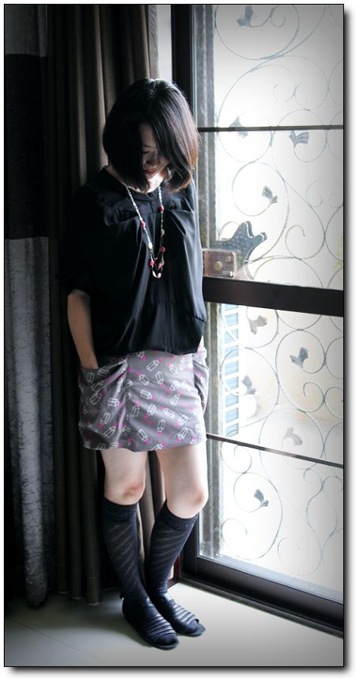
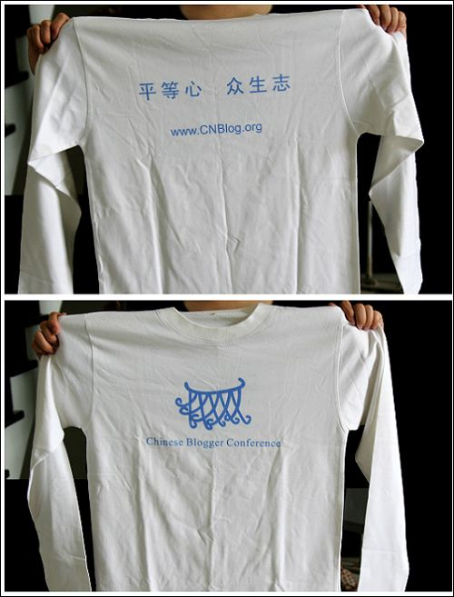

没完没了 @ Jun 25, 2009
最近迷上看电视连续剧，可是电视台插播广告的手法实在很流氓。片头来几个广告，放1/3后再插进几个广告....内容结束广告...片尾广告....放广告时会跑去洗碗，洗完了广告还没结束。那么去洗几件衣服，没完没了的广告想不深入人心也难。郁闷之余心里琢磨：偏不买广告里的商品。
最近迷上看电视连续剧，可是电视台插播广告的手法实在很流氓。片头来几个广告，放1/3后再插进几个广告....内容结束广告...片尾广告....放广告时会跑去洗碗，洗完了广告还没结束。那么去洗几件衣服，没完没了的广告想不深入人心也难。郁闷之余心里琢磨：偏不买广告里的商品。
Maggie昨晚用水泡饭，就咸鸭蛋解决了晚饭。好歹我还炖了粥，买了紫燕新推出的藤椒鸡和百吃不厌的翅尖，拌了个黄瓜。人的精力就好象感情，若专注于一件事便会怠慢了另一件，工作稍稍忙碌便无心思准备好吃的饭菜，混混了事。夏天的到来让人也懒惰几分，发愁每日三餐该如何解决，想想还是有人伺候的好。特别想体会那些天长日久熬成婆婆妈妈的女人，她们如何不厌其烦每日买菜做饭？
中午早早等在食堂门口，带了两个饭盒，准备打些食堂的菜回家。打菜的师傅均从中年男换成老太太，态度那个差....一同事说这态度就是你“爱吃不吃”的意思。联想到最近银行提高各种服务费用，而服务态度却未见提高，由此工商银行的英文缩写ICBC被唤作“爱存不存”。看来服务业这张统一的ICBC面孔，还得受着！
******************************************************
连续高温，换上并不适合办公室温度的真丝衣裙，想想好多年不倾向真丝面料的衣服，皆因保养和洗涤的困难。Maggie说昨晚手洗了一件，很累。而我之前是放洗衣机里洗，不是有洗真丝的选项么？有次问西门子的工程师：“洗衣机洗出来的衣服容易起球...”他说这正是他们目前无法解决的问题。所以用洗衣机很伤衣服，易褪色，且只能洗干净那些穿一天即换的，真丝、羊毛质地还是手洗洗吧。
每每穿上黑色衣服，心里就塌实。胸前这条MOS项链是一个MM说这条好看就买这条，一时拉不下脸买的。当时并不是特别喜欢，觉得太粉嫩，但和今天这条裙子恰到好处的呼应起来了。

看到王建硕的朋友TW的留言，如果你们来南京需要什么帮助，可以联系我，邮件地址跟贴在你的留言下面了。周一早晨的办公室处于一片乱战之中，忙一段落后看了王建硕的BLOG，这才得知他周末来南京参加会议。
我们是国内最早一批blogger，中国茶始于2002年4月，到2009年写了7年，中间更换过几个网址，现在看我以前写的东西简直没法看。不知道王建硕现在是否还在做他的客齐集？建硕同时写英文Blog和中文Blog，如他所写：“Christina, me, Isaac, and Robert are still writing our blogs. BTW, Christina and I was not as aggressive as the other two. Their blogs have been blocked by GFW many times - an acknowledgment of the depth of "harmful information" by the government.”
我很喜欢挂在他网址下的另一个Blog“MVM”，只是更新比较慢，好久才能看到一篇。清晰记得MVM上有一次题词这样写的：“我要躺在你的睫毛下，天天都过情人节。”大致意思是这样的，当时以为是女性blogger，看了段时间才发现是IT男，而且还是位会做手工活的男性，他烤面包，收集葡萄酒塞子，烹饪技术也不赖，照片拍的好，文字有条理，不矫情，最重要的是他身上体现出的职业精神...如此细腻、勤劳又有才华的男人估计快绝种了。总结下来那些professional，unhurried的blog还是吸引力大一些的。
点击这里看国内第一界中文网志年会的照片，可以发现最早一批blogger的身影~这件长T虽然大到无法穿，可还是保存在衣橱里作为纪念。当时会议邀请了10位中文个人blogger，更多参与的是官方代表，还有许多投资公司的人，那时网络处于容易赚钱的时期，分分钟一个新网站就出现了。

每每周日的中午开始忙，一般是送LUKE去洗澡，兼食品采购。但这个周日的中午改成收拾换季衣服，途中大脑想打退堂鼓好几次，可是心里却坚定地说：“你不可以再拖了，今天必须收拾完。”要是能有一个象PARIS那么大的衣帽间，就不会在换季的时候折腾。好在鞋子做到一目了然了，衣服还不行，收拾的时候不断惊叹：“还有这件衣服啊，都忘了。”如果衣服也可以一目了然，每一件的使用率会大大增加。这次狠狠心，能淘汰的都拣出来。如果把买10件便宜货的钱集中起来买一件品质和设计更好的，既能穿得久又赏心悦目，还节约了衣橱空间。我真的很偏爱黑色，即使夏天，黑色衣服还是占据了衣帽间大部分的色彩。其实，现在的我并不那么爱穿黑色了...
决定收拾衣服皆因前一天看了《Confessions Of A Shopaholic》（购物狂的自白），虽然是浪漫轻喜剧，可对自己还是有些震撼，当然我还算不上真正彻底的购物狂。之前给光光的邮件里写自己喜欢购物俨然有些病态，以前下班后直接去的是商场，没什么要买也要去逛逛。我觉得这是一种精神疾病，就象REBACCA说的：“购物的过程可以让人感觉美好，可是之后又会恢复到原来的情绪中....然后接着购物...”不过世上有不喜欢购物的女性吗？当然有，比例肯定很小。爱购物的人可以看看这部片子，还是很有启发的。现实生活可就没电影里运气那么好了，一切得靠自己克服才是正道。
这部剧的女主角ISLA FISHER她真的算不上标准的好莱坞甜心，身材不够“沙漏”，脸蛋不够小，但丝毫不仿碍她成为新的时尚ICON。ISLA到了33岁才等到她人生第一个女主角，该电影改编自大热的小说《一个购物狂的自白》，ISLA出演在全世界女人心中有着强烈共鸣的女主角REBACCA。她非常风趣，乐观，爽朗，还曾经出版过两本畅销小说《Seduced By Fame》和《Bewitched》。
ISLA FISHER，水瓶座，33岁，在中东的阿曼马斯喀特出生，20世纪80年代移民到澳大利亚西部的珀斯，哦，也就是上次和我一起看芭蕾舞剧的HELEN定居的地方。
我们每个人都有情绪失控的时候，很多负面情绪会影响我们的工作和生活，我们需要对这些负面情绪加以控制。对待愤怒的情绪，或是悲伤、焦急的情绪，都各自有不同的办法，不过有一个总的原则：对待强烈情绪的最好办法，还是要找到疏导感情的渠道。情绪得到了适当的疏解，不再积压在心里，在平时工作生活的时候就不会总有一块石头压在心上了。
控制情绪的办法：
A、肯定自己
其实愤怒的情绪和个人自我概念有相当密切的恶性循环关系，充满自信的人对于别人的侮辱轻慢，或许不会那么在意。为什么会在意一个不相干的人轻视自己？通常是因为我们并不能肯定自己的价值，不能确定自己的虽然有缺点、有软弱，仍然是可爱的。当别人伤害到我们，我们便无法一笑置之。
----说说我看到的故事：听见某人对朋友A评价如何如何，很生气，在A那里发牢骚，结果A淡然地说：“不知者不愠，不亦君子乎。”这样的反应在A身上很多，任何怨恨到了他那里都被化作一缕轻烟，散去。
B、表达自己
面对各样压力、挫折，很难没有情绪，我们应学习心平气和地表达自己的情绪，而不伤害别人。
----比如这一周我觉得压力很大，心情很烦躁，每天没心思注意形象，蓬头垢面，脸部肌肉下垂.......可是与过去相比我还是沉住气，等待这种情绪过去。虽然心平气和表达情绪是我比较欠缺的能力，不过随着年龄增长我在刻意培养这种能力，并希望向好的方向发展。
C、安抚自己
如果你选择不表达自己的情绪，或者当时的情况没有办法讲得很清楚，还有第二条路可以选择--就是从内在转换自己的想法，把原先引起你生气的事情重新审视一下，想想有没有别的观点或角度可以运用？任何事情本身都没有绝对的好或不好，看你用什么角度去看它。你认为这件事情的出发点是好的，心情就可很愉快。这样的解决方法，不只是抵制外在的愤怒，更能让自己的情绪得到平复的舒缓。
----我选择将情绪放在心里。疏导压力的方式我有两个，一是找朋友倾诉，二是购物。昨天下班后我就干了这两件事，先和朋友吃饭聊聊天，然后一个人去逛街购物。今天早晨心情豁然轻松。当然你得找正确的对象去倾诉，“大嘴巴”就算了，本来是为了解决情绪问题，结果“大嘴巴”会让你的问题更加严重。更不会选择父母来倾诉，因为他们听完后会比自己还沉重，然后是没完没了的唠叨.....还是放弃这条渠道吧！所以过了30岁我更倾向靠自己缓解压力和不良情绪。实在不行，就出去旅行一趟吧！工作总有累的时候啊~
听见心脏跌落在骨盆的声音。。。
1.你喜欢独自旅行。是 --> 2 否 --> 3
2.你每星期都会去逛街。是 --> 4 否 --> 5
3.你喜欢看浪漫爱情喜剧。是 --> 6 否 --> 7
4.你习惯早晨跑步。是 --> 8 否 --> 9
5.你认为女人最重要是婚姻，男人最重要是事业。是 --> 10 否 --> 11
6.你拥有很多知心朋友。是 --> 12 否 --> 13
7.你喜欢聊电话。是 --> 14 否 --> 15
8.你喜欢时尚衣服。是 --> 16 否 --> 17
9.你认为经济是爱情的保障。是 --> 18 否 --> 19
10.你睡眠的时间在晚上十二时以后。是 --> 20 否 --> 21
11.没事你也喜欢喝点酒。是 --> 8 否 --> 10
12.你在家养了很多植物。是 --> 9 否 --> 10
13.你喜欢听悲伤的情歌。是 --> 10 否 --> 8
14.你认为美是出自内心而并非表面。是 --> 9 否 --> 8
15.你喜欢魔术多于杂技。是 --> 10 否 --> 9
16.你并不赞成婚前性行为。是 --> A.长颈鹿 否 --> 17
17.你喜欢和不同类型的异性交往。是 --> B.豹 否 --> 18
18你常在半夜想些伤心的事情。否 --> 19 是 --> C.鹿
19.你认为自己双重人格严重。是 --> D.斑马 否 --> 20
20.你敢于主动向喜欢的人表白。是 --> E.企鹅 否 --> 21
21.你会定期去健身院。是 --> F.狐狸 否 --> G.羚羊
答案如下：
长颈鹿--你沉默、优雅，有一种发自内在的亲和气质，令人感觉舒服，在岁月的沉淀中更散发出不可抵挡的魅力。你懂得甚么叫品味，甚么是生活。在你身边的每一个人，都会感受到你的优美与友善，无关外貌，亦无关年龄，只是沁人心脾的魅力。
豹--你走在时尚的前线，总是以不变应万变获得人生每一刻的精采，同时带给别人生命的热情。你魅力四射，你的光芒更是无法被别人遮盖，你懂得如何让生命永远精彩美丽。只是有时要控制一下自己的脾气，那么你的野性和不羁就更叫人醉倒！
鹿--你崇尚简约，毫无野心，永远悄然而立，这不是漠然，而是涵养。你才华横溢却看淡一切，永远用清晰的眼光看世间的纷扰，却不刻意逃避，永远用冷静和理智去看情场上的春去春来。你自然淡雅的笑容最是迷人。
斑马--你在静态时固然表现出悠闲的优雅，即使忙碌为口奔驰，也能在日日如是的工作中散发魅力。你不会放纵自己，也不会因不值得的事情虐待自己。无论何时，你都流露出动静皆宜的吸引力。
企鹅--你善良、开朗并有一种阳光的气质。可爱又无所谓的性格是你最吸引人的地方。你的可爱并非幼稚那种，而是一种纯净的美。即使发现人性的险恶，你亦始终保持自我。你纯洁善良的笑容，可让不少人溶化。
狐狸--你有令人倾慕的外貌，并且知识丰富，有理性。在你的生命中，最不可能缺少的就是爱情，你的举手投足，引来无数异性的心旌荡漾。你既敏感又含蓄，不会有火辣辣的激情，但你懂得无数浪漫的花样，令异性喜出望外。
羚羊--表面上，你看似冷漠得有些孤傲，其实你却有不一样的热情；在你的心底更有对世间一切最纯真的想法。你有情却不多情，你可以改变却不善变。肤浅的异性不会接近你，走进你世界的必定是有内涵的人。
连续两天被卧室空调室内机漏水折腾，昨天维修第一次，晚上接着漏，明天准备来第二次。看来品牌并不能说明问题，即使选择了最好的品牌以及环保的“新冷酶”，还得有配套的安装、维修的技术工人才好。总有你不擅长的方面，当自己没有能力解决问题的时候，只能被他人牵着鼻子走。连续两天折腾，加上工作的压力，一日三餐的准备，以及南京第一例甲型H1N1患者的出现，真是让人心力交悴，面部肌肉下垂，职业妇女不好做啊！据说南京的这个患者从美国回来，压根没在家呆满七天，尽到处溜达，家住水游城附近......
昨天空无一人的人行道上，一个MM戴着大口罩行走在烈日下......在我看来人人都希望生活有点变化，一旦有机会，个个理所当然。偶尔一次病假，偶尔一次旅行，偶尔一次出差，偶尔一次变迁，偶尔一次青春痘、偶尔一次穿红戴绿，偶尔一次PARTY，偶尔一次相识，偶尔一次培训，偶尔一次流行病，偶尔一次...各种变化中未必都是快乐，只是有别于一成不变的生活，而新意昂然。
请睁大眼睛看车上的那行字。
饭后，商家送了两只搪瓷杯和一枚胸章。
这杯子用起来也不会比STARBUCKS的杯子差到哪里。
非常耐用。

饭店的饮料杯也是这种搪瓷杯。

“江南公社”饭店，在里面讲话要扯着嗓门儿，服务生收拾餐具的声音那是....热闹。

一早和同事聊到法航客机失事中的两段故事，一则是德国某女乘客没赶上该客机，幸免于难，结果在去意大利驾车途中出车祸而死；二则是一家四口，父母带两个孩子，玩笑地说分乘两个航班以免一家遇难，结果母子遇难，父女安全抵达法国。
第一则故事让人想起电影《Final Destination 》I II III（死神来了），我只看过其中的两部，有一部开头也是一行人赶航班，而Alex有特异功能，能看到即将发生的事情....还是蛮有意思的电影，主要讲述死神是不可能被骗过的，要你什么时候死，即使躲过一劫，之后还是会死。只有团结起来才能改变命运？问题是，我们之中谁有特异功能呢？蹊跷的是那个德国女乘客真的没能躲过死神的安排......